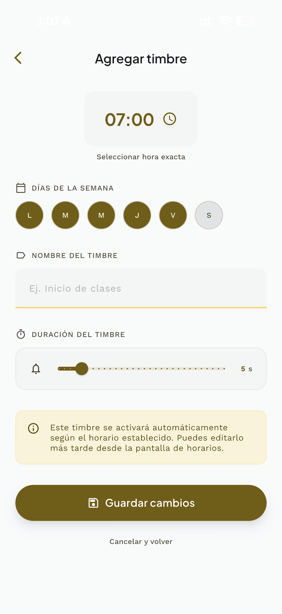
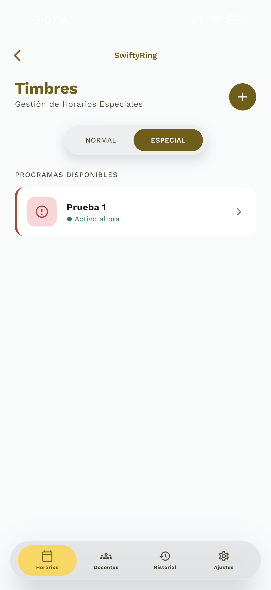
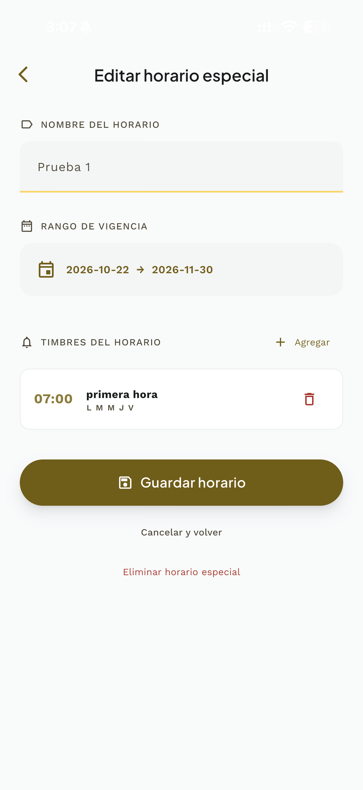
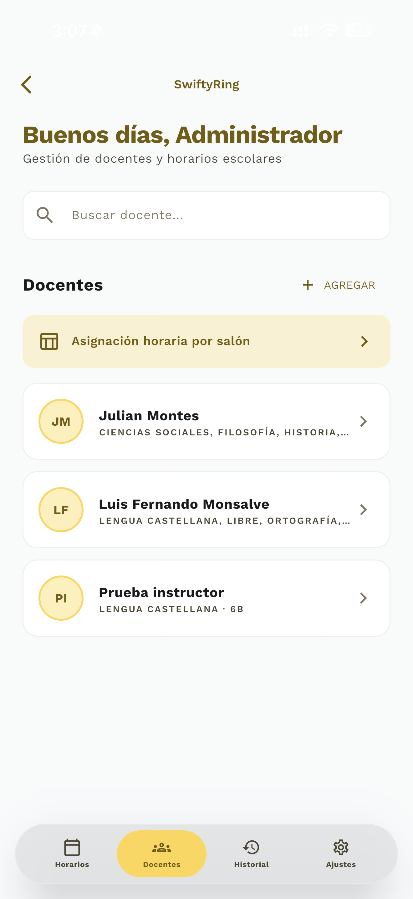
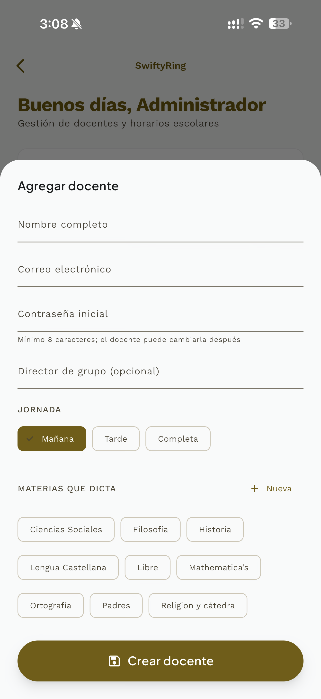
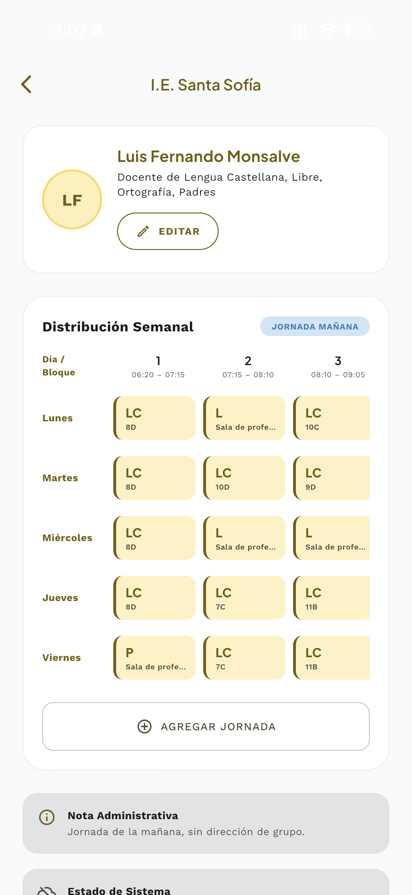
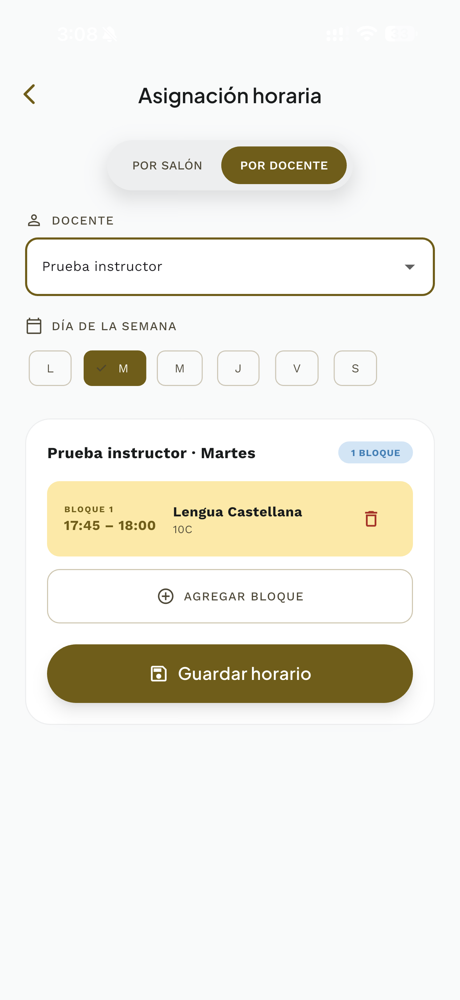
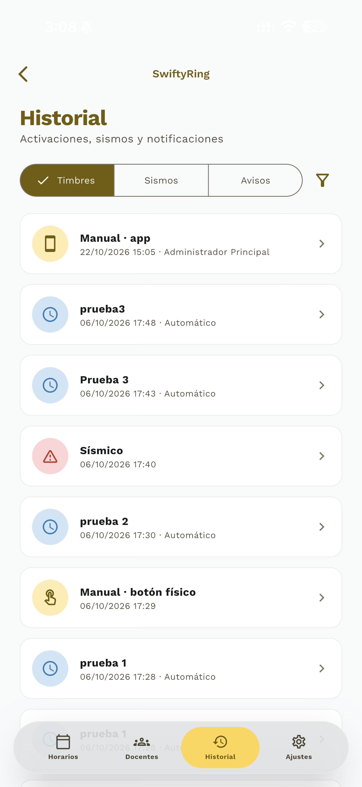
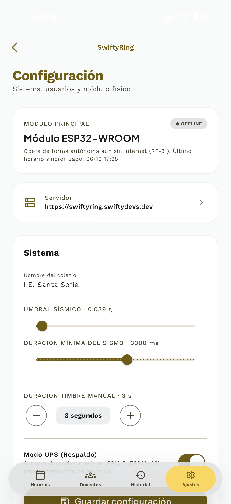
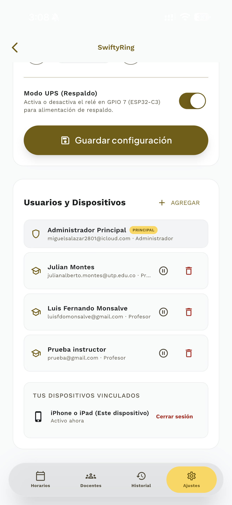

SENA CDITI · Risaralda · 2026
SwiftyRing
Guía exhaustiva para la gestión de horarios, control manual inmediato, asignación académica docente, bitácora de auditoría y respuesta ante eventos telúricos.
Acceso y Navegación
La aplicación móvil de SwiftyRing constituye el punto de mando para la comunidad educativa de la I.E. Santa Sofía. Al iniciar sesión con credenciales institucionales, el sistema valida la firma del token criptográfico y conduce al usuario a las vistas autorizadas según su rol:
| Rol de Usuario | Pantalla de Entrada | Acciones Clave Autorizadas |
|---|---|---|
| Profesor (Docente) | Mi Horario | Consulta de clase actual, próxima aula asignada, cuenta regresiva al siguiente timbre y alertas sísmicas. |
| Administrador | Control de Timbres | Accionamiento manual inmediato, programación regular y especial, asignación horaria docente y calibración física. |
| Operador | Control de Timbres | Supervisión de la jornada y accionamiento manual ante contingencias. |

Lanzador de Módulos
Cumple con el requerimiento de aislamiento arquitectónico (RNF-12): la recepción (core/) presenta los módulos disponibles sin acoplar dependencias internas.
- Perfil Activo: Muestra el saludo oficial y el rol con el que se ha autenticado (ej. Administrador).
- Acceso a SwiftyRing: Tarjeta con el color dorado institucional y resumen descriptivo de las capacidades del timbre.
- Cierre de Sesión Centralizado: El botón superior revoca el token en el dispositivo de forma segura.
Control de Timbres
La pantalla principal del módulo de timbre (F-02) ofrece al administrador el panorama completo de los eventos programados para el día y el control directo sobre el actuador físico del timbre escolar:


Accionamiento Inmediato
Al presionar el botón central con ícono de campana, la orden viaja al servidor y se refleja al instante tanto en el colegio como en la pantalla:
- Ventana ¡Timbre Activo!: Como se observa en la segunda captura, la app confirma con el aviso "La señal está sonando ahora..." mientras el relé conmuta la campana física.
- Próximo Toque: Tarjeta destacada con la hora inminente (ej. 09:05 AM) y el motivo pedagógico.
- Selector NORMAL / ESPECIAL: Permite comprobar si el colegio opera bajo horario habitual o evento extraordinario.
Programación Habitual
Para estructurar la rutina ordinaria de la institución (entradas, cambios de clase de 55 minutos, descansos y salidas de jornada):
Formulario de Timbre
Al pulsar el botón flotante "+" o el ícono de lápiz en cualquier tarjeta del día, se abre el formulario de precisión horaria:
- Rueda Horaria Digital: Selección exacta de la hora y minuto militar (ej. 07:00 AM).
- Días Activos: Puntos selectores para fijar los días de la semana en que debe sonar (Lunes a Viernes).
- Etiqueta Descriptiva: Nombre pedagógico del evento (ej. Primera hora, Salida a Descanso).
- Duración en Segundos: Lapso de cierre del relé de estado sólido (estándar: 3 segundos para cambio de hora; 5 segundos para entrada o salida).

Horarios Especiales
Cuando la institución modifica la jornada de forma temporal, los horarios especiales permiten definir una rutina paralela sin sobreescribir la programación regular:


Programas y Calendario
El administrador puede anticipar los eventos del año escolar y calendarizarlos con antelación:
- Catálogo de Programas: Tarjetas con el nombre del evento (ej. Prueba 1, Acto Cívico) y conteo de timbres asociados.
- Rango de Vigencia: Fechas exactas de inicio y término (ej. 2026-10-22 al 2026-11-30).
- Reversión Autónoma: Cumplida la fecha límite, el microcontrolador retoma automáticamente la rutina normal sin requerir ajustes manuales.
Directorio Docente
Para garantizar que cada profesor reciba los avisos tempranos de su clase, el módulo cuenta con una base de datos docente sincronizada con el servidor de identidad:


Alta y Búsqueda
Herramientas ágiles para la administración de la planta docente del colegio:
- Buscador Instantáneo: Filtro en tiempo real por nombre, apellido o materia pedagógica.
- Tarjetas Informativas: Muestra las iniciales del docente, áreas impartidas (ej. Lengua Castellana, Ortografía) y estado.
- Formulario de Registro: Alta rápida indicando nombre completo, correo institucional y número de identificación.
Asignación Horaria
Permite relacionar las horas de clase de cada profesor con las aulas físicas del plantel educativo:


Distribución y Salones
Visualización y asignación bidireccional de la jornada:
- Ficha de Distribución: Desglose semanal de clases, horas pedagógicas y espacios libres del educador.
- Modo POR SALÓN: Permite consultar qué docente y qué grupo ocupa cada aula física en una hora determinada.
- Modo POR DOCENTE: Permite armar la carga horaria semanal del profesor seleccionando día y bloque.
Historial y Auditoría
En cumplimiento con el requerimiento de auditoría RF-17, la plataforma registra de forma permanente cada evento sonoro o de emergencia ocurrido en la institución:

Pestañas de Monitoreo
La vista de historial clasifica las bitácoras en tres áreas de consulta:
- Pestaña TIMBRES: Registro cronológico de todos los toques. Detalla si fue automático (por horario), manual desde la app (con el nombre del usuario) o manual desde el botón físico de la caja.
- Pestaña SISMOS: Historial de eventos telúricos registrados por el sensor inercial MPU-6050, indicando aceleración pico y duración de la alarma.
- Pestaña AVISOS: Registro de notificaciones de cambio de aula entregadas a los docentes.
Configuración de Hardware
Panel reservado exclusivamente para la administración institucional para verificar la conectividad de la caja física y gobernar la energía de respaldo:


Salud del Microcontrolador
Monitoreo continuo de los componentes de hardware:
- Estado del ESP32: Señala si el módulo está ONLINE recibiendo órdenes cada 2 segundos o OFFLINE operando de manera autónoma.
- Calibración Sísmica: Ajuste del umbral de aceleración para evitar falsas alarmas por tráfico pesado o portazos.
- Modo UPS (GPIO 7): Control del relé secundario de respaldo para conmutar la alimentación ante cortes en la red comercial.
Seguridad y Soporte
Actuación ante Detección Telúrica (MPU-6050)
Cuando el acelerómetro físico detecta un patrón inercial continuo característico de un sismo, el microcontrolador activa la campana en modo evacuación (sonido continuo/intermitente) y notifica de inmediato a los celulares de la comunidad escolar.
- Suspensión de Clases: Todo docente debe pausar actividades académicas al primer toque de alarma.
- Evacuación Inmediata: Guiar al estudiantado de forma ordenada hacia los puntos de encuentro predeterminados.
- Autonomía Crítica: La alarma física sonará incluso si las telecomunicaciones o la red de internet comercial colapsan.
Preguntas Frecuentes y Contingencias
¿Qué ocurre si se corta la energía eléctrica?
Si la caja física cuenta con respaldo UPS en el circuito de 5V y campana de respaldo, el sistema continuará operando. El chip RTC DS3231 mantendrá la hora exacta con su batería de respaldo de litio.
¿Qué hacer si un docente no recibe notificaciones en su teléfono?
Verifique en los ajustes del celular que la app cuente con permisos de notificaciones habilitados y que la optimización de batería no limite la ejecución en segundo plano.